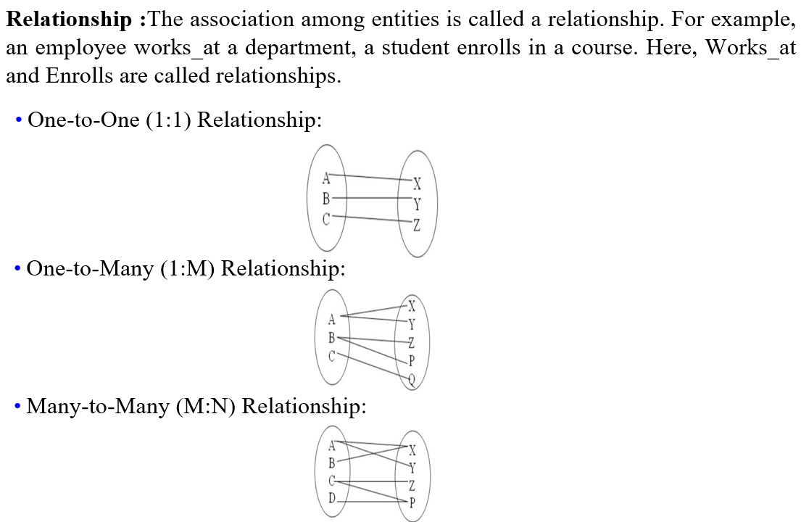

Data Model It is a collection of conceptual tools for describing data, data relationships, data semantics and consistency constraints. That means a data model provides a way to describe the design of database
Some terms of Data Model
Entity: An entity can be a real-world object, either animate or inanimate, that can be easily identifiable.
Entity Set: It's the collection of similar type of entities.
Attribute: These are the properties of entities.
Constraints: Constraints are restriction placed on the data.

1)Hierarchical Model
It organizes data into a tree like structure, with a single root,to which all the other data is linked.
The hierarchy starts from the root data, and expands like a tree, adding child nodes to the parent nodes. One to many relationship& tree like structure.
2)Network Model It organizes data more like a graph and are allowed to have more than one parent node. Many to many data relationships &Graph
3)Relational Model It organizes data in two dimensional tableand relationship is maintained by storing a common field.
Some terms of Relational Model
Domain: Set of values that the attribute can take.
Attribute: Name of a column in particular table.
Relational Instance: They are represented by a finite set of tuples.
Relational Schema: It contains the name of the relation and name of all columns or attributes.
Relational Key: In relational key, each row has one or more attributes. It can identify the row in the relation uniquely.
4)Entity-Relational(ER) Model It develops the conceptual design for the database. In ER model the database is portrayed as a diagramcalled an entity relationship daiagram.
5)Object-Oriented(OO) Model Here, both data and their relationships are contained in a single structure called an object. Objects that share similar characteristics are grouped in classes.
6)Object-Relational(OR) Model The OO model works poorly when accessing more than one data item. The OR model is best suited for retrieval of groups of data,but can also be used to access unique data items fairly efficiently 7)Semi-Structured Model
It permits the specification of data where individual data items of the same type may have different sets of attributes.
The XML (Extensible Markup Language) is widely used to represent semi-structured data. It supports unstructured data.